You don't need React
Brief hyperbole on the unnecessary complexity of current web development techniques and an introduction to web components as a simpler, native, and more maintainable solution.
André Gonçalves
The problem
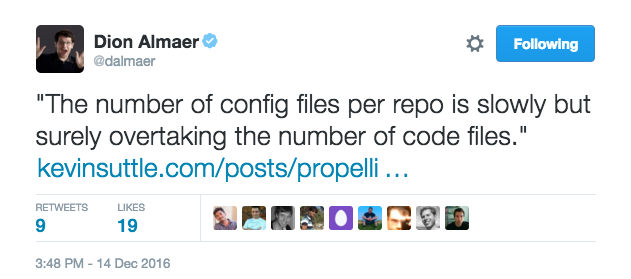The problem
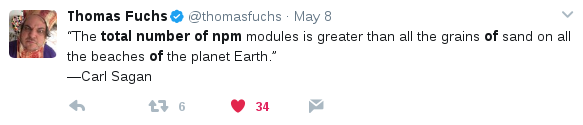The problem
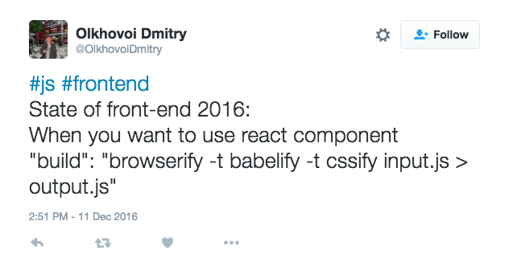The problem
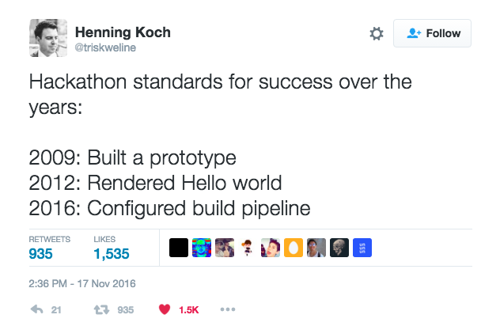The problem
The problem
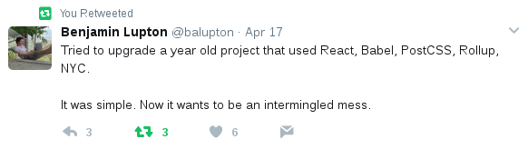The problem
The problem
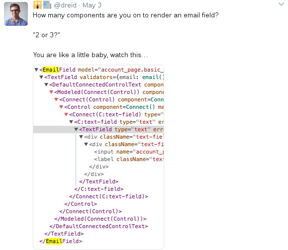The problem
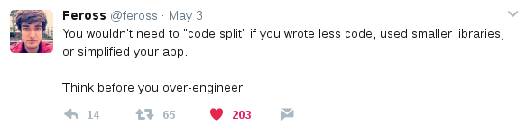The problem
We have a fetish with complexity and abstraction
We build fragile over-engineered solutions
We love our tools too much
We like clever solutions, instead of solving problems people actually have
The problem
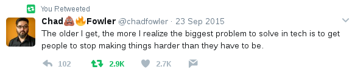The Better way (tm)
“Simplicity is a prerequisite for reliability.”
- E.W Dijkstra
The Better way (tm)
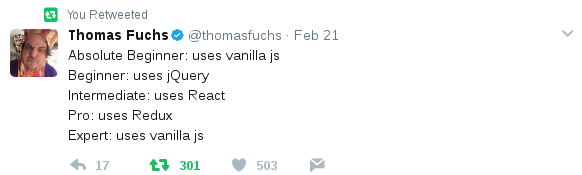The Better way (tm)
KISS - Keep it simple stupid
Continuously fight complexity and unnecessary abstractions
Reduce the number of moving parts
Focus on the simplest solution that can work
Reduce the number of dev and prod dependencies
"Treat your dependencies like your own code"
The Better way (tm)
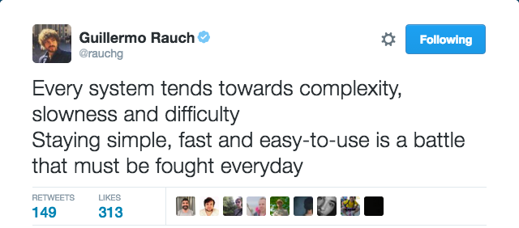The Better way (tm)
Learn and invest on the web platform core, instead of frameworks:
CSS instead of SASS/LESS/etc
ES6/7 instead of Typescript/CoffeeScrit/etc
Web Components instead of React/Angular/etc
Platform features will outlive libraries
And your are reducing the number of dependencies and the abstraction level
But, but ...
What are you talking about? React is cool and fast...
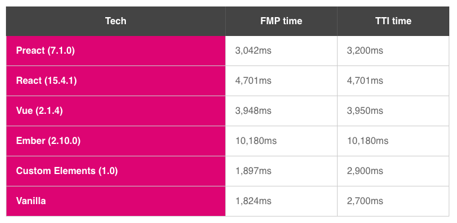Always use the right tool for the job
Some ideas in React are actually awesome
React downstream dataflow
components are supposed to be immutable and the data within them unable to change. This way, they will only listen to data that is flowing from upstream and not data that is coming from each other. That is why React.js is known for the creation of canonical data sources that will stay synchronized across the components that will pay attention to it. It is what makes it the best framework for creating highly interactive web applications.
React uses Virtual DOM
React uses a very efficient "diffing" algorithm for mutating the DOM only when necessary. It creates a lightweight tree from Javascript objects that mimic a DOM tree.
But you can have those using native browser web components

Let's build an extremely simple web components page with downstream data flow and virtual DOM "diffing"
Why components?
- Web standards and browsers are evolving, so should we.
- Reusing components from different frameworks is challenging, but it shouldn't be.
- They make excellent leaf nodes, and can be dropped in other framework components like DOM.
Web components are...
- Composable: combine them together creating new experiences.
- Encapsulated: isolate markup, styles, and behavior.
- Reusable: can be extended, allowing you easily create new components from existing ones.
The basics...
Custom Elements
Browser APIs to define new HTML elements
HTML Templates
The <template> tag now allows documents to contain inert chunks of DOM
Shadow DOM
Encapsulated DOM and styling
HTML Imports
Declarative methods of importing HTML documents into other documents
The index.html
<html>
<head>
<meta charset="utf-8">
<meta name="viewport" content="width=device-width">
<title>Clock</title>
<link rel="import" href="clock.html">
</head>
<body>
<cool-clock></cool-clock>
<cool-clock tz="Asia/Tokyo"></cool-clock>
</body>
</html>
The component.html
<template id="el-tmpl"> <div id="my-clock">Clock</div> </template>
customElements.define('cool-clock', Clock);
class Clock extends HTMLElement {
constructor () {
super();
this.state = {};
}
connectedCallback () {
this._attachShadowDOM();
this.setState({
date: new Date(),
tz: this.getAttribute('tz')
});
}
The component.html (2)
setState (obj) {
this.state = obj;
this.render();
}
render () {
const d = this.state.date;
const tz = this.state.tz || "Europe/Lisbon";
let html = `${d.toLocaleString('pt', {timeZone: tz})}`;
diff.innerHTML(this._root, html);
}
The app.js
class App {
constructor () {
let clocks = document.querySelectorAll('cool-clock');
setInterval(_ => {
clocks.forEach((c) => {
c.date = new Date();
});
}, 500);
}
}
new App();
Working demo